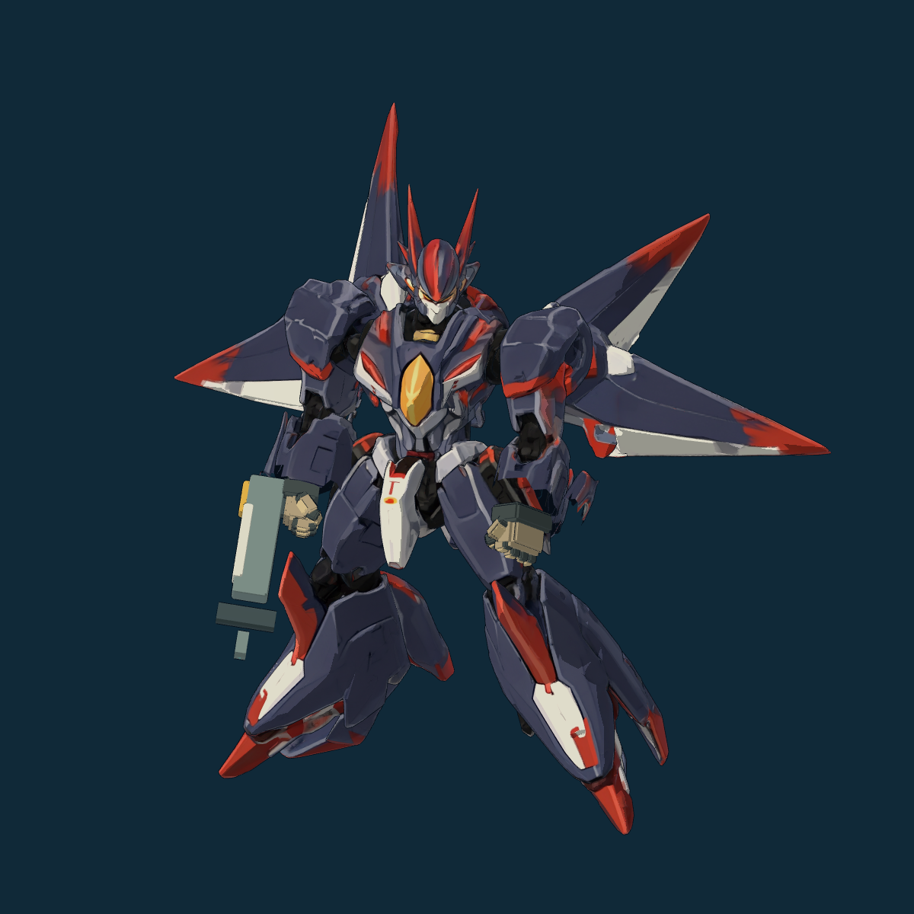
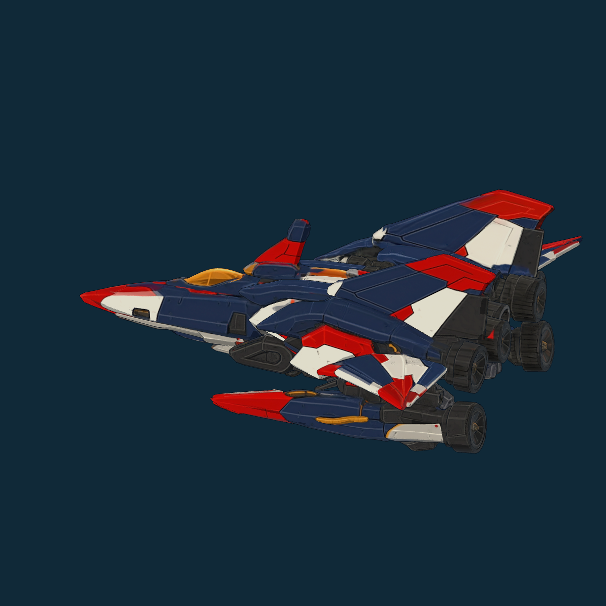
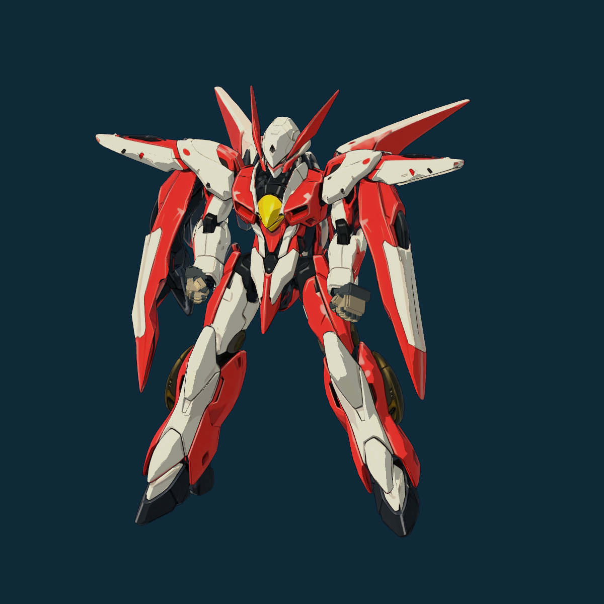
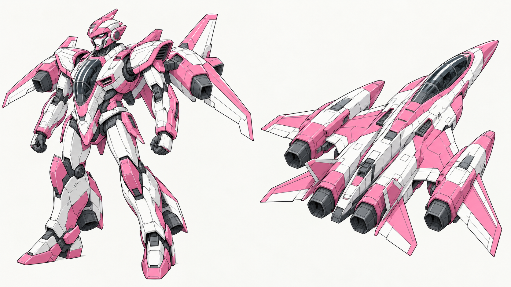
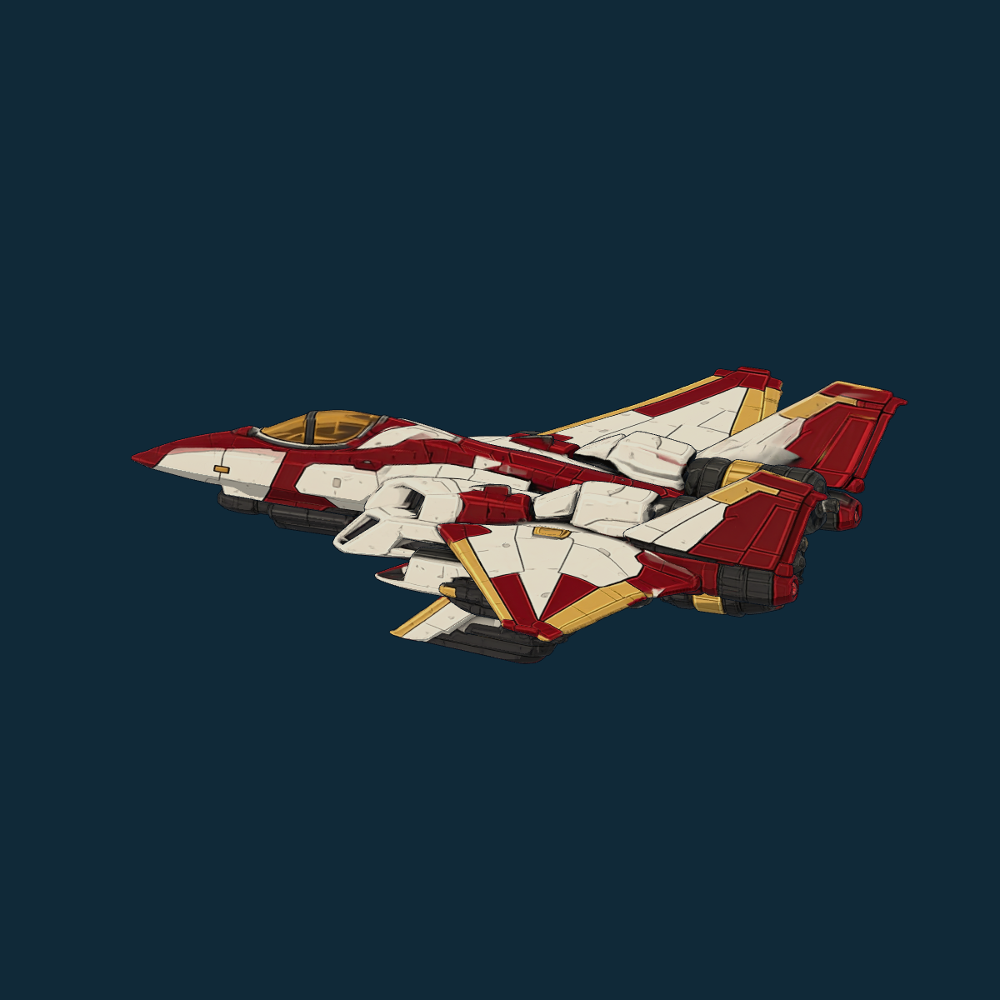

保留现用机设，先做配色与材质对齐
比较结果：上一轮新稿在机设记忆点上没有超过现用Demo资产。头胸、翼形和腿足先保留；后续仅从同一机体的色块、暗部、描线和反射开始比较。
雷翎投射Transformers喷气重涂谱系，歌翼投射Macross可变战机/歌声支援谱系。它们来自不同系列，应该保留各自机械语法，共享本作的动能赛璐璐画法。
左图取自当前游戏加载的模型，右图为新稿局部；光照、背景与相机不同。本页比较造型和色块组织，不冒充同镜头换色前后验收。
雷翎
Transformers / Starscream重涂喷气机谱系。项目档案只锁到喷气重涂谱系，未锁定为某个具体原作型号。



| 现用设计保留价值 | 新稿未形成优势之处 |
|---|---|
| 喙状窄头、深色红刃、背部放射翼形成鲜明大轮廓。 | 新稿独立头、长枪、紫色座舱和三角翼清楚，但整体更接近通用航空枪兵。 |
| 深主色与红/象牙切面、黄胸核心已形成集中识别点。 | 没有提出比现用放射翼更强的轮廓记忆点，蓝紫近色使大色块层次偏弱。 |
| 航空态有多层翼面与推进器群；具体数量与部件收纳仍需原结构工序校核。 | 双喷口/翼根和枪轨可作为结构研究参考，不能据此证明整体更优。 |
保留现用人形/航空态机设，先做保形换色和材质对齐；新稿不作为整机替换母版。
维持深色航空机气质；以墨蓝/钴蓝建立清楚主块，朱红集中翼尖与少数动作部位，黄色收在胸部/传感器。具体比例待同构图色样比较。
航空态与完整新稿

歌翼可变机
Macross / 超时空要塞可变战机与歌声支援谱系。项目R04星翼巡演的文化/可变战机投射，不照搬具体VF型号。



| 现用设计保留价值 | 新稿未形成优势之处 |
|---|---|
| 长双角、收尖面部、象牙白/红肩翼与垂翼裙甲，轮廓修长且醒目。 | 粉白座舱胸和四发动机分配更直白，但头胸和轮廓更普通。 |
| 黄色胸部核心与展开翼面形成较稳定的视觉中心。 | 粉色没有当前歌翼颜色采用回执；从外援候选继续沿用，不等于符合本作当前美术方向。 |
| 现用红白航空态与人形有同一套切色和流线关系。 | 四挂舱可追认是结构研究收获，尚未证明比现用翼形更有角色特色。 |
保留现用头胸/肩翼/腿足和骨架，先统一红白涂装的色块与材质；新稿不作为整机替换母版。
维持象牙白为主，朱红集中胸肩与翼面，墨蓝/石墨负责关节和暗部；减少大面积冷纯白、金属碎高光与常驻划痕。
航空态与完整新稿

后续采用范围
现用头胸、翼形、身体比例与骨架/动作继续保留。新稿的座舱/翼根/喷口对应作为研究材料；“部件解释更直白”不足以决定替换整机。此前头部参考建议也不再作为新头重画任务。
画法按项目Working标准：有线压的深墨蓝轮廓、各自英雄色、4—7个大色块、最多两级硬阴影、哑光大面；减少均匀小刻线、碎反光和常驻划痕。统一画法不要求同配色，也不把两台全部洗成灰蓝。
本轮只做比较，未改运行资产；新色样尚未制作。模型完整变形与连续动作仍按原任务验证。